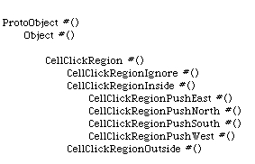
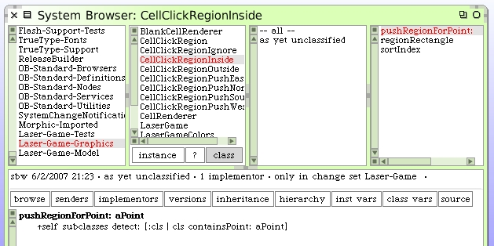

We will use the same subclasses technique to further subdivide the "inside" click region into 4 regions. One new sub-region for each of the push directions of North, East, South and West. Here's our new hierarchy.
Implementation of the selecting method and the corresponding methods on the sub-classes is straight-forward. Note that we have no concerns here about prioritization.
For now, implement a useless ^true response to the #containsPoint: message in each of the push subclasses. All of the methods in the region subclasses have been class methods so far.
We'll work out details in the next section.